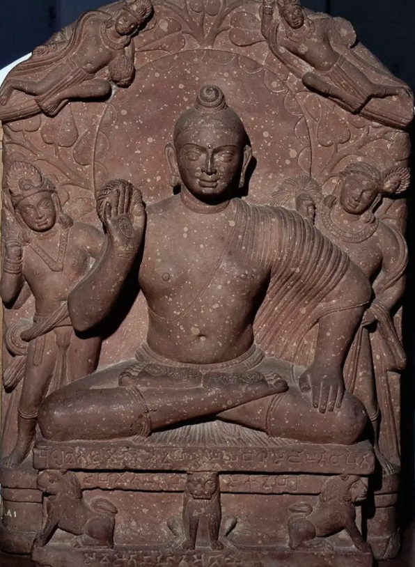
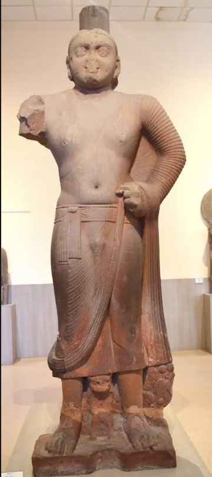
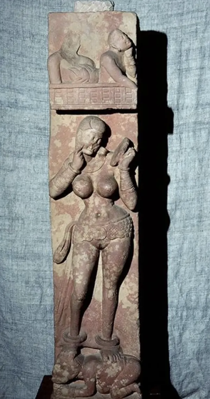
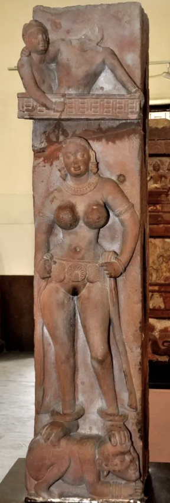
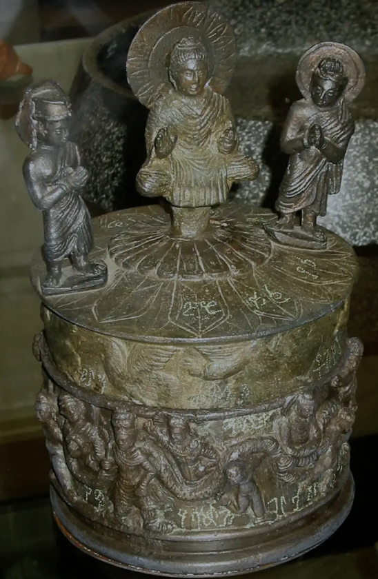
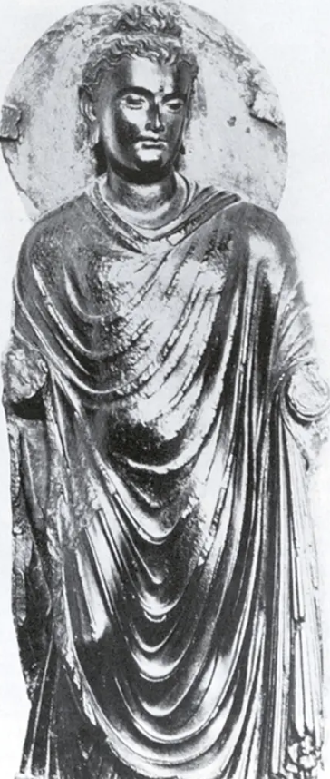
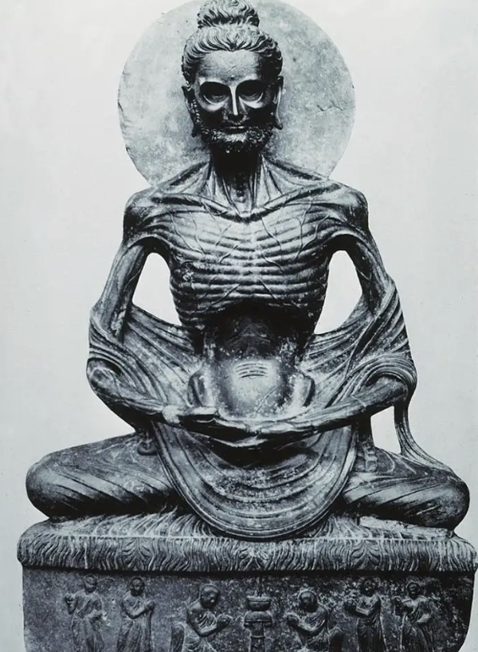
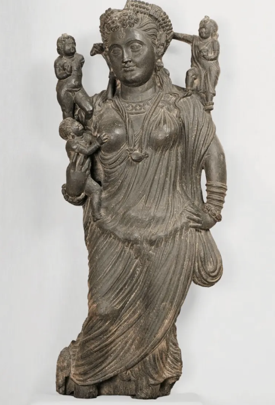
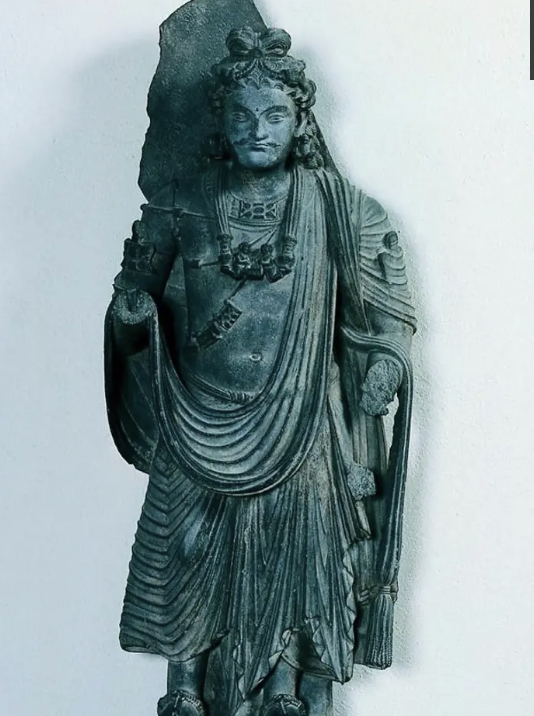
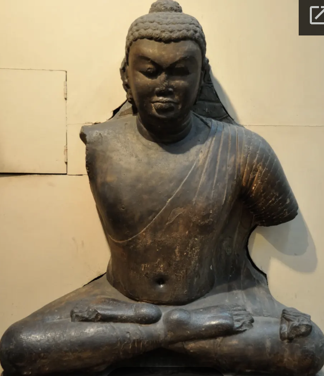

Connection Map: Key Relationships
- Abhaya mudra → Katra Buddha, Bala Buddha, Kanishka Reliquary
- Ushnisha (cranial bump) → all Buddha images
- Urna (forehead dot) → all Buddha images
- Lakshana (auspicious signs) → Katra Buddha, Bala Buddha
- Tribhanga (S-curve) → Hariti, Bodhisattvas, Yakshis
- Parkham Yaksha → Proto-Buddha form (frontality, barrel chest)
- Katra Buddha → Yaksha-derived with Buddhist signs
- Bala Buddha → "Transformed Yaksha" (Friar Bala commissioned)
- Bhuteshar Yakshis → becoming attendants in Kushana era
- Mathura → Red Sikri Sandstone, Katra/Bala Buddhas
- Gandhara → Gray micaceous schist, Hoti Mardan, Fasting Buddha
- Gandhara → Roman drapery influence
- Kanishka (emperor) → Kanishka Reliquary, Shah-ji-ki-Dheri
- Bodhgaya Buddha → snail curls, heart-shaped face, spiritual shift
- Less physical → more spiritual/introspective representation
- Darshan (divine gaze) → lost in Gupta period
- Nagarjunakonda Buddha → southern regional style
- Bodhisattva → delays enlightenment to help others
- Maitreya → future Buddha / Buddha-to-come
- Avalokiteshvara → Bodhisattva of infinite compassion
- Bodhisattvas dressed like princes (jewelry, hair) vs. plain Buddha
- Hariti → former demon, now protector of children
- Yakshis → nature spirits, increasingly attendant
- Dwarf Yakshas → garland-bearers on Kanishka Reliquary
- Maya → mother of the Buddha
Stylistic Evolution of Buddhist Art
From the early Yaksha tradition through the Kushana period's twin centers of Mathura and Gandhara, culminating in the Gupta "Golden Age" — trace how the representation of the Buddha evolved from a powerful nature deity to an increasingly spiritual and introspective form.
Yaksha Tradition
ca. 30–375 CE
3rd–6th c. CE
available
available










available
available
Key Insight: The Evolution of Buddha Representation
The transformation from Yaksha to Buddha is the central narrative of this period. The Parkham Yaksha establishes the visual vocabulary: massive frontal body, barrel chest, flywhisk, balanced weight. When the Buddha is first depicted in human form at Mathura, he inherits this Yaksha physicality — the Bala Buddha is explicitly described as a "transformed Yaksha," retaining the sturdy build but swapping the flywhisk for the abhaya mudra and adding Buddhist lakshana. The Katra Buddha shows the same transformation: powerful, direct gaze (darshan), lion throne, broad chest.
Gandhara takes a different path, shaped by contact with provincial Rome. The Hoti Mardan Buddha wears Roman-style drapery, uses contrapposto, and looks downward — more introspective than Mathura's confrontational gazes. The Fasting Buddha literalizes ascetic texts in hyper-realistic detail. The Bodhisattva figures from Gandhara remain elaborately adorned, visually bridging the human and divine worlds.
In the Gupta era (the "Golden Age"), the pendulum swings toward spirituality. The Bodhgaya Buddha of Year 64 has snail-shell curls, a heart-shaped face, and notably does not meet the viewer's gaze — darshan is gone. The figure becomes less physical, more transcendent. The cheerfulness of Kushana Mathura Buddhas disappears. This marks a definitive shift from deity-as-presence to deity-as-ideal.
Quiz Mode
ARTH 105 — Quiz 3: Kushana & Gupta Buddhist Art